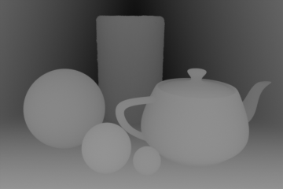

Depth Buffer Experiment

This is a demonstration of Z-sorting in HTML5 canvas without having to iterate over any pixels.
Use the above slider to change the depth of the fragment.
- The sceneColor, sceneDepth, fragColor, and fragDepth buffers are given
- fragDepth is drawn on top of sceneDepth with the global compositing mode set to 'lighten'.
- sceneDepth is copied into diffDepth
- Compositing mode is set to 'difference' and fragDepth is drawn into diffDepth.
- Compositing mode is set to 'color-dodge' and a white fill is applied to diffDepth.
- diffDepth is drawn onto sceneColor in 'multiply' mode.
- diffDepth is filled white again, this time with the 'difference' compositing mode. (Invert the image)
- fragColor is multiplicatively drawn onto diffDepth
- diffDepth is drawn additively onto sceneColor